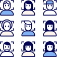
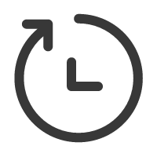
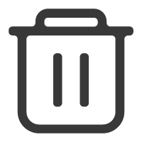

{% load static %}
<!DOCTYPE html>
<html lang="en">
  <head>
    <meta charset="utf-8" />
    <title>Layui</title>
    <meta name="renderer" content="webkit" />
    <meta http-equiv="X-UA-Compatible" content="IE=edge,chrome=1" />
    <meta name="viewport" content="width=device-width, initial-scale=1, maximum-scale=1" />
    <!-- layui的样式引入 -->
      <link rel="stylesheet" href="{% static 'css/layui.css'%}">
    <style>
      .contentBox {
        width: 100%;
        height: 100vh;
        border: none;
      }
      .layui-layout-admin .layui-body {
        overflow-x: hidden;
        overflow-y: hidden;
        top: 0;
        left: 240px;
      }
      /* logo区域 */
      .header {
        position: absolute;
        width: 150px;
        height: 200px;
        padding: 40px 45px;
        display: flex;
        flex-direction: column;
        justify-content: space-around;
        align-items: center;
      }
      .header img {
        max-width: 130px;
      }
      /* 左侧边栏背景色 */
      .layui-layout-admin .layui-side {
        width: 240px;
        top: 280px;
        background-color: #fff !important;
      }
      .layui-side-scroll .layui-nav {
        background-color: #fff;
      }
      .layui-side-scroll .layui-nav .layui-nav-item a {
        font-weight: 600;
        color: #383838;
        height: 50px;
      }
      .layui-side-scroll .layui-nav .layui-nav-item:hover {
        background-color: #f6f9fc;
      }
      .layui-side-scroll .layui-nav .layui-nav-item a:hover {
        border-right: 5px solid #68cbfb;
        color: #68cbfb;
      }
      /* 点击时触发的颜色 */
      .layui-this > a {
        background-color: #f6f9fc !important;
        border-right: 5px solid #68cbfb;
      }
      .layui-nav .layui-nav-item a {
        padding: 10px 0px 10px 80px;
      }
      .img-container {
        position: absolute;
        z-index: 99;
        left: 20%;
        height: 40px;
        width: 40px;
        margin: 10px 0;
      }
      .img-container img {
        width: 60%;
        height: 60%;
      }
    </style>
  </head>
  <body>
    <div class="layui-layout layui-layout-admin">
      <div class="header">
        
        
      </div>

      <div class="layui-side layui-bg-black">
        <div class="layui-side-scroll">
          <!-- 左侧导航区域（可配合layui已有的垂直导航） -->
          <ul class="layui-nav layui-nav-tree navBox" lay-filter="test">
            <li class="layui-nav-item nav">
              <div class="img-container">
                
              </div>
              <a href="javascript:;">工作台</a>
            </li>
            <li class="layui-nav-item nav">
              <div class="img-container">
                
              </div>
              <a href="javascript:;">历史记录</a>
            </li>
            <li class="layui-nav-item nav">
              <div class="img-container">
                
              </div>
              <a href="javascript:;">回收站</a>
            </li>
          </ul>
        </div>
      </div>

      <div class="layui-body">
        <!-- 内容主体区域 -->
        <div>
          <iframe src="../template/work.html" class="contentBox"></iframe>
        </div>
      </div>
    </div>

    <!-- layui的js文件 -->
    <script src="../static/js/layui.js"></script>
    <script>
      //JS
      layui.use(['element', 'layer', 'util'], function () {
        var element = layui.element,
          layer = layui.layer,
          util = layui.util,
          $ = layui.$

        //头部事件
        util.event('lay-header-event', {
          //左侧菜单事件
          menuLeft: function (othis) {
            layer.msg('展开左侧菜单的操作', { icon: 0 })
          },
          menuRight: function () {
            layer.open({
              type: 1,
              content: '<div style="padding: 15px;">处理右侧面板的操作</div>',
              area: ['260px', '100%'],
              offset: 'rt', //右上角
              anim: 5,
              shadeClose: true
            })
          }
        })
      })

      // 获取左侧边栏的容器和左侧边栏的个数
      let navBox = document.querySelector('.navBox')
      let navlist = document.querySelectorAll('.nav')
      let imgList = document.querySelectorAll('.icon')
      // 获取内容区域
      let contentBox = document.querySelector('.contentBox')
      // 循环为左侧侧边栏绑定点击事件
      for (let i = 0; i < navlist.length; i++) {
        navBox.children[i].addEventListener('click', () => {
          navlist.forEach((item) => {
            item.children[1].style.color = '#383838'
          })
          navlist[i].children[1].style.color = ' #68cbfb'
          // 根据nva来切换内容
          if (navBox.children[i].innerText === '工作台') {
            contentBox.setAttribute('src', './work.html')
            imgList[i].src = './image/工作台.png'
            imgList[1].src = './image/lishijilu.png'
            imgList[2].src = './image/customerarchivesrecycleBin.png'
          } else if (navBox.children[i].innerText === '历史记录') {
            contentBox.setAttribute('src', './history.html')
            imgList[i].src = './image/历史记录.png'
            imgList[0].src = './image/gongzuotai.png'
            imgList[2].src = './image/customerarchivesrecycleBin.png'
          } else {
            contentBox.setAttribute('src', './recycle.html')
            imgList[i].src = './image/回收站.png'
            imgList[1].src = './image/lishijilu.png'
            imgList[0].src = './image/gongzuotai.png'
          }
        })
      }
    </script>
  </body>
</html>
